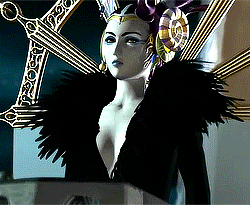
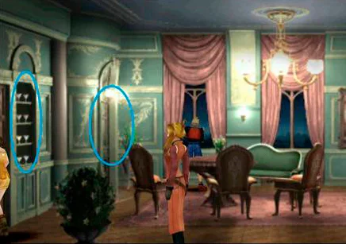
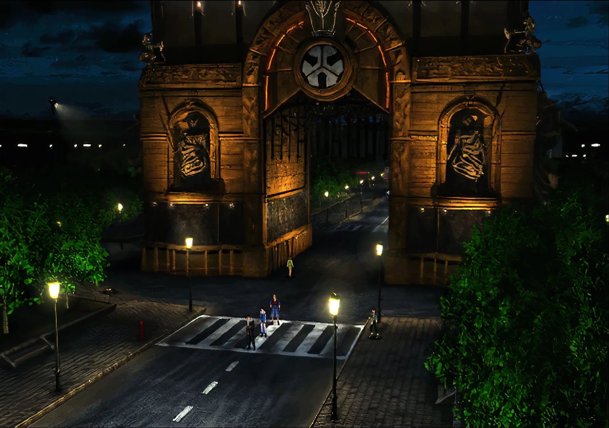
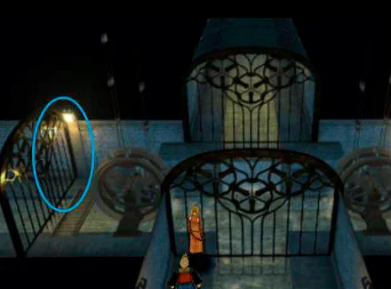
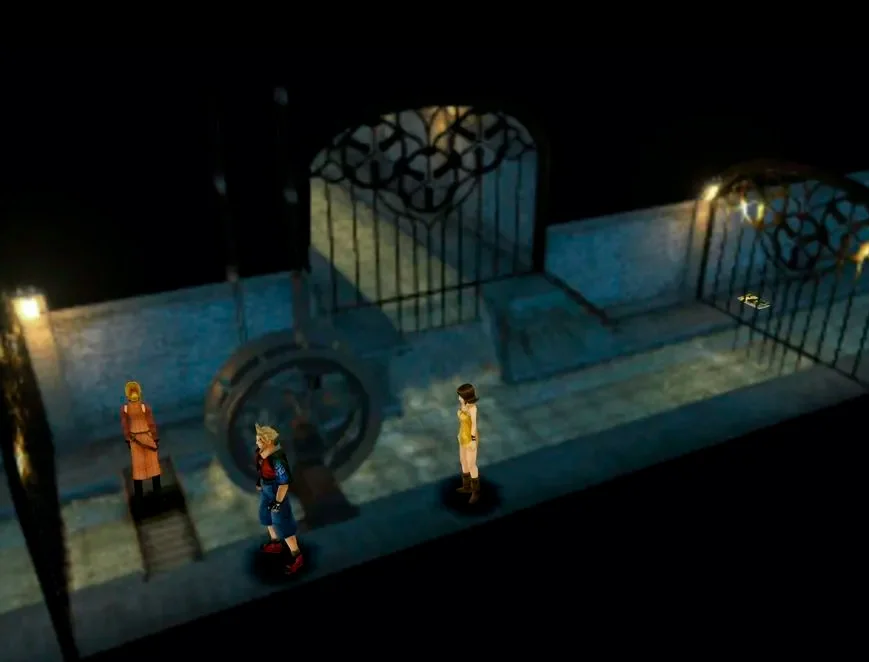
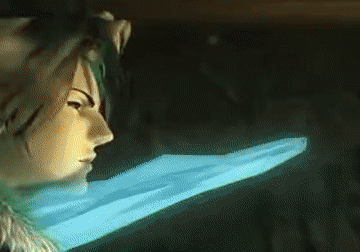

Desfile de la Bruja
Después de una excursión a La tumba del Rey sin Nombre, ya tenemos la información que necesitamos. Regresa a Deling y dale al soldado de la residencia Calway el número de la espada de la entrada del laberinto para poder pasar. Una vez dentro, habla con Rinoa para hacer que la escena avance. Ve siguiendo al general mientras te va explicando en qué consiste el plan. Una vez haya terminado, vuelve a la residencia Calway para comenzar el atentado. No te preocupes por los G.F. por el momento, no hace falta enlazar nada. Intenta abandonar la habitación y habrá un evento.(y que evento...) Sigue a Calway hasta las posiciones designadas para cada equipo. Habla con él bajo el Arco y luego sigue tras él hasta la posición de Squall e Irvine. Ahora tendrás que volver a la residencia. Con Rinoa, sube por las cajas junto al coche. Luego bordea la cornisa hacia la deecha y sube por la escalera y la siguiente cornisa. Avanza para ver una secuencia. Cuando vuelvas con Quistis, presta atención a la siguiente imagen:
Acércate a la zona de las copas de cristal para coger una. Luego ve al otro punto marcado con un círculo, la cámara cambiará y verás una estatua. Interactúa con ella para colocar la copa y revelar un camino secreto. Guarda la partida y, ahora sí, Prepara los GF. es normal despues de tanto dialogo de olvidarse eso y hay una mazmorra por delante con algunos combates.
Una vez en la alcantarilla, ve hacia la izquierda, sube por la rueda de agua y pulsa el botón de acción sobre la reja para abrirla y cruzar. La imagen cambia al desfile. Sube por el mismo sitio que subiste con Rinoa y vuelve a preparar GF para Irvine y Squall. Asegúrate de que al menos uno tiene Extraer, es importante! Ve al fondo del pasillo para enfrentarte a la amenaza.
Jefe - Gargola x2
- Vida: 1747
- Vulnerable: Hielo y Sagrado
- Resistente: Petra
- Recompensa: Resucitador G.F.x4
- Extraccion: Cura, Antimagia, Petra, Carbuncle
- Estrategia: La pelea puede ser tediosa ya que su combo es petrificar y luego un ataque fisico que mata (Y desaparece) automaticamente un personaje... mas tedioso aun si olvidaste enlazar tus habilidades,podrás vencerlos con los G.F más potentes. Sobre todo con Hermanos y Quetzal. Que no se te olvide extraer todas las magias posibles y al G.F. Rubí, que te ayudará en los combates poniendo escudos a todos los miembros de tu equipo.
Al acabar el combate, examina la trampilla del pasillo para llegar a la sala del reloj. Recoge el rifle para que los eventos avancen. Volvemos con Quistis, recuerda volver a preparar los enlaces, y equipar a Rubí para que suba de nivel y aprender habilidades. Avanza y cruza la reja que señalo en la imagen.
Toca la escalera y se caerá, pero no cruces. Sigue recto y atraviesa la siguiente reja. Sigue por el único camino posible, atravesando una reja en el lado derecho del siguiente cruce. Trepa por la rueda de agua y baja por la del lado derecho en el próximo cruce. Al bajar, ve por la parte inferior de la pantalla, la reja se abrirá. Llegamos a otro cruce, rueda de agua hacia la derecha y de nuevo hacia abajo. Repite el procedimiento en el siguiente cruce y llegarás al pasillo donde has empezado, pero en el otro cauce. Sigue hacia abajo. Llegarás a la sala de la escalera donde empezaste las alcantarillas, ve por el único camino posible hacia la derecha. Llegarás a esta sala.
Sube por la rueda y continúa. No te preocupes por la revista, es una revista de armas que puedes comprar más adelante. Cuando llegues al punto de guardado, salva y sube por la escalera. Vuelve a interactuar con la escalera para subir y accionar la palanca cuando te lo indiquen. En cuanto vuelvas con Squall, prepara los enlaces para el, Irvine y Rinoa. En cuanto cierres el menú te tocarán dos combates contra jefes.
Jefe - Seifer

- Vida: 1150
- Vulnerable: Veneno
- Resistente: Nada
- Recompensa: Nada
- Extraccion: Cura, Piro, Vida
- Estrategia: Es un combate uno contra uno sin espectáculos. Seifer usa ataques físicos y magia de fuego. Ten a mano magias curativas. Para vencerle puedes usar ataca con lo que puedas, pero, lógicamente, le harás más daño si usas a tus G.F. sobretodo a Quetzal. Después de tres rondas se dará por vencido... pero esto no acaba aquí.
Jefe - Edea
- Vida: 7000
- Vulnerable: Nada
- Resistente: Nada
- Recompensa: Nada
- Extraccion: Cura+, Doble, Vida, Antimagia
- Estrategia: Hay 2 formas de afrontar esto, la primera es la clasica, aguantar, Usar los G.F para que la cosa sea más llevadera, curarte constantemente y causarle daño con todo lo que tengas sino... puedes usar a Rubí, invócalo constantemente. Edea perderá todos sus turnos lanzando Antimagia para eliminar el efecto de Espejo, lo que evitará que te lance sus potentes magias. Con esto en mente, el combate ya está ganado.
Al reducir la vida de la Bruja a 0, te encontraras con una dramatica secuencia, al terminarla, guarda la partida para continuar con la 2da parte de 4 en total
